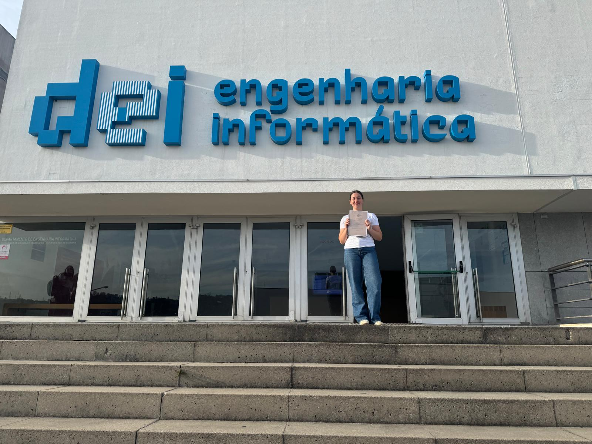
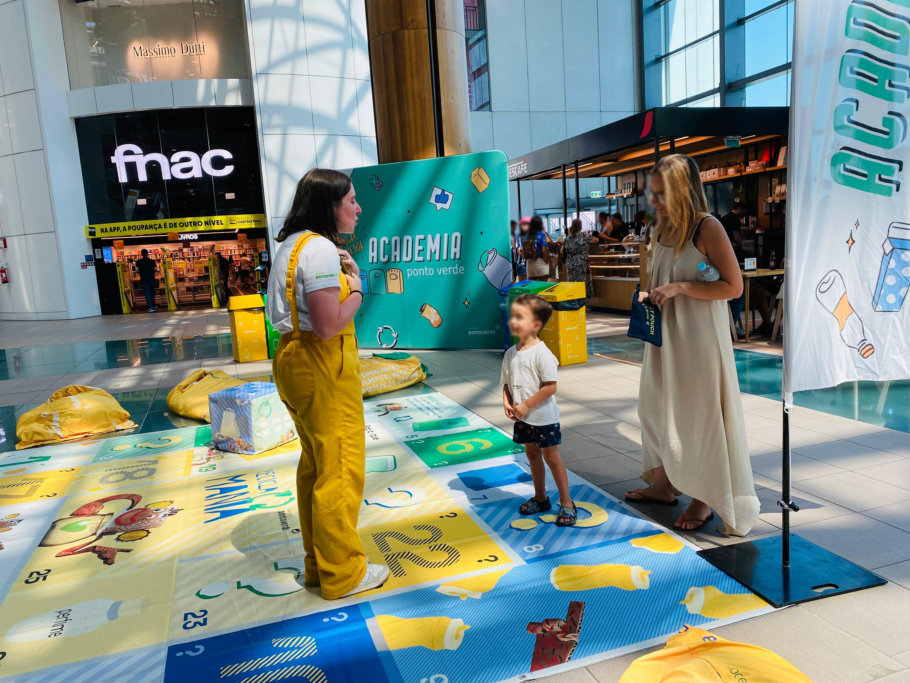
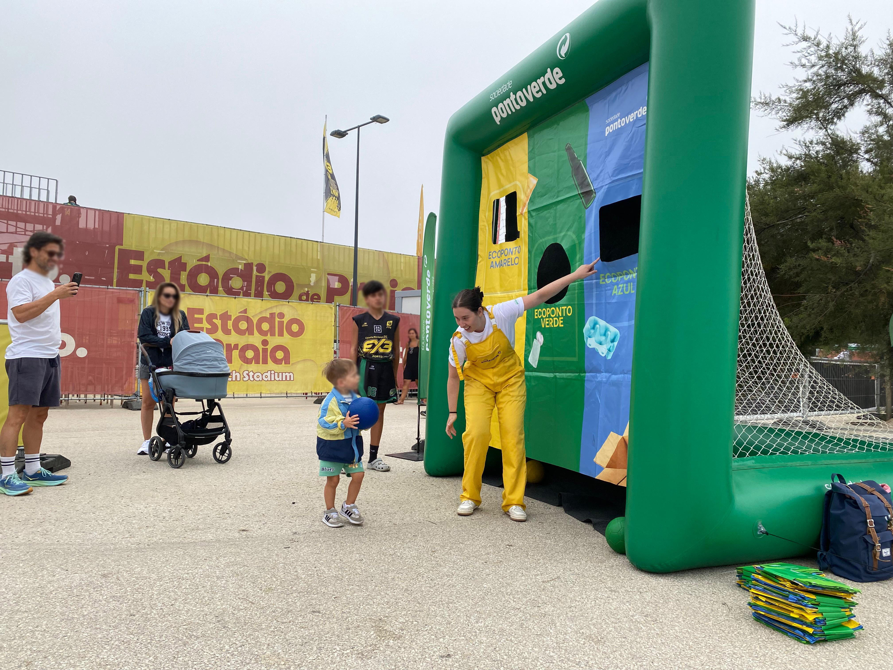
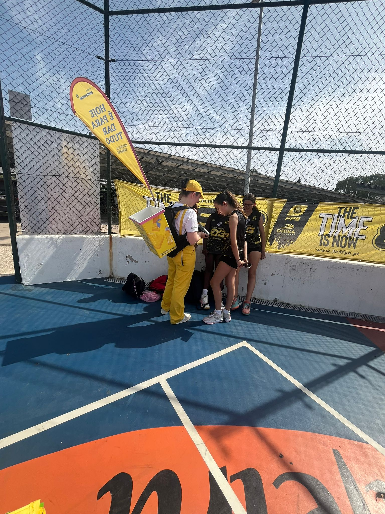
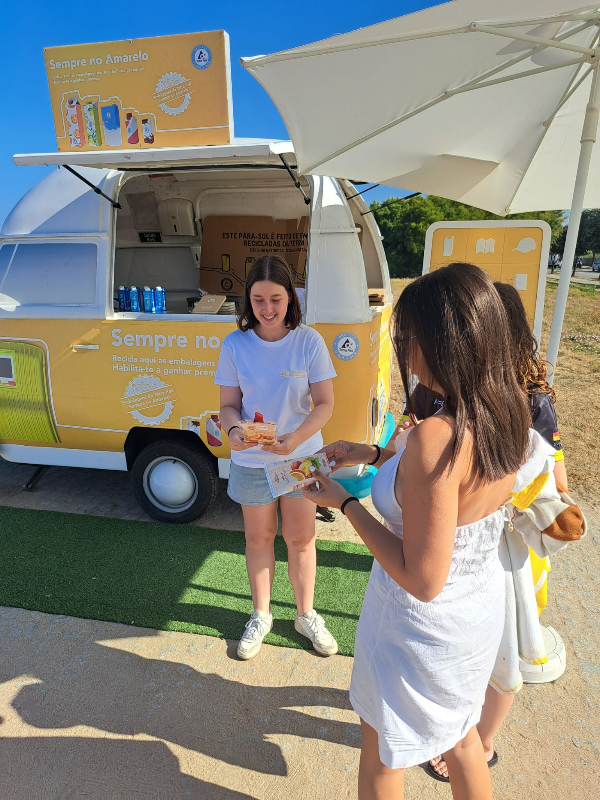

About
Me
Hello! My name is Filipa Orquídea, I'm 24 years old and I live in the city of Santo Tirso. I completed my bachelor's and master's degrees in Design and Multimedia at the University of Coimbra. My interests include typography, graphic and editorial design, computational design, web design, and photography. Currently, I'm working as a freelance graphic designer and looking for my first job opportunity in the field.
Professional Experience
Web Design - Freelance
Mente Ativa - Website Development (October 2025 - Present)
Creation of an institutional website for a study centre in
Valongo, with the aim of promoting the space, services and
educational activities.
Development of the layout and navigation structure, ensuring
clear, attractive communication that is consistent with the
visual identity of the space.
Graphic Design - Freelance
COE - Visual Identity for clothing brand (March 2022 - April 2022)
Creation of the logo and definition of the visual identity for a clothing brand, including colour study, choice of typeface and adaptation of the brand to different backgrounds and applications.
Events and Marketing Assistant
Espaço Livre – Organisations and Sport, Vila Verde (Summers 2017–2025)
Seasonal and ongoing collaboration in environmental awareness campaigns promoted by Sociedade Ponto Verde, focusing on recycling and sustainability. Support for the organisation and execution of sporting and recreational events, including setting up inflatables, managing entertainment areas and direct contact with the public. Participation in face-to-face marketing and publicity activities, contributing to the visibility of campaigns and interaction with the target audience. Development of interpersonal skills, applied creativity, teamwork and time management in dynamic and busy contexts.





Skills
- Proficient in Adobe Creative Suite (Photoshop, Illustrator, InDesign)
- Knowledge of web design and development (HTML, CSS, JavaScript)
- Strong understanding of typography and layout design
- Excellent communication and teamwork skills
Hobbies
- Photography
- Traveling
- Reading
- Watching movies and series
- Playing video games
- Code new projects